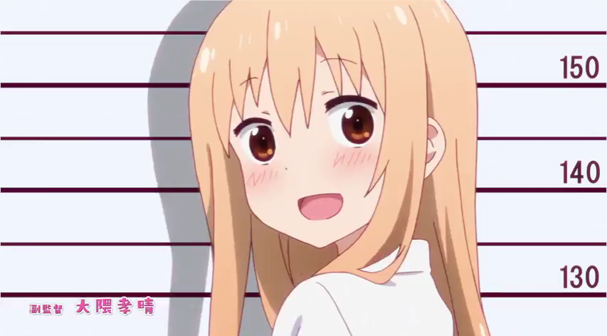

Oh! What? Where?
Who? Why? In what ways?
Sometimes your luck is around the corner
Life is just like that
The change of pace is in the palm of your hand
And nothing will happen if you will not try
Make yourself open-minded
Even losing, at least learning
You just don't know and do not understand
Everything that happens in our lives has its cause
Existentialism

Existentialism is a philosophy that emphasizes individual existence, freedom and choice. It is the view that humans define their own meaning in life, and try to make rational decisions despite existing in an irrational universe.
Interesting!
How Everyone Use Their Free Time
By: Erbium Wright

Study lessons and play games alternately. Watch movies about fantasy, and reality. Meditate and chill to relax mental health. Consume foods to satisfy cravings. Exercise for the health of physical body.
The Advantages of Having Vacant Time
By: Thor Gold
Accomplish countless joyful things without worrying something more important projects. Having fun occasionally is an exercise to produce dopamine in order to maintain the mental health.
Brave friends capture the fun.
Difficulty of The Game of Life
By: Bolly Pen

Life is simple, but human discovered how to make it complicated yet unfair. It is a game without loading saved states, but all games are able to be hacked and so in it. When this game is over, there are no extra lives. However, if survived the near-death bonus level, means missions await.
Row Your Boat Gently Down The Street
By: Penny Celine
Very famous nursery rhyme but hides hidden message for Life. Transform somewhat into valuable one. The message was never taught in school but ethically realized as growing up. Life is not just a game but also a dream